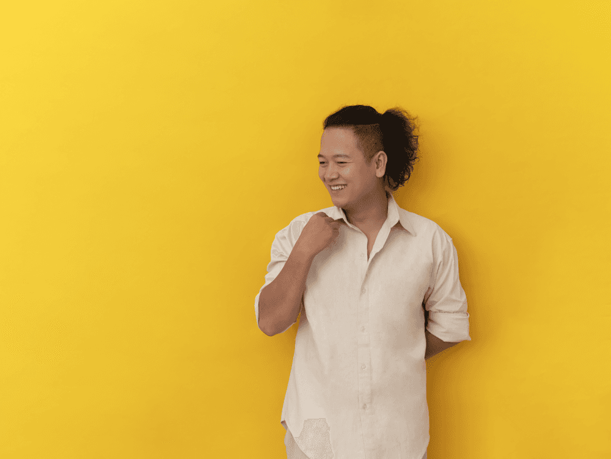

TRỨ // HANOI, VIETNAM
"Tập trung vào giá trị cốt lõi thay vì sự hào nhoáng rỗng tuếch."
[ 04 // CHUYỆN LÀ... ]
TỪ BẢN VẼ TĨNH ĐẾN TRẢI NGHIỆM SỐNG ĐỘNG
Tôi bắt đầu từ Graphic Design và chuyển sang UI/UX vì muốn hiểu điều gì thực sự xảy ra sau khi một người nhìn thấy giao diện: họ hiểu gì, chọn gì và gặp khó khăn ở đâu.
Từ nền tảng đó, tôi đang học cách biến những layout trên Figma thành trải nghiệm thực tế với Framer. Biết mình chưa giỏi tất cả, tôi chọn cách kiên trì vọc vạch thêm Rive và AI.
Mục tiêu của tôi không có gì to tát: chỉ là muốn mỗi pixel mình đặt xuống đều thực sự có ích cho người dùng trong vai trò Product Designer.